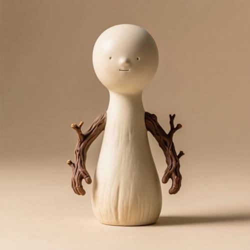
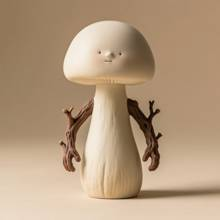
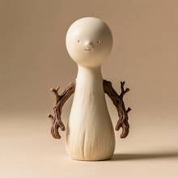
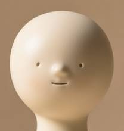

Grammar — Generated image: A ceramic mushroom man with arms like branches but no
Generated image: A ceramic mushroom man with arms like branches but no fungus cover on his head.


Judge — Direct
- FAILGrammar - Negation — The prompt specifies that the mushroom man should have 'no fungus cover on his head'. The image, however, clearly depicts the character with a large, red mushroom cap with white spots on its head. This is a fungus cover, directly contradicting the negative constraint in the prompt.
- PASSCompound - Feature Matching — The image shows a figurine that appears to be made of ceramic, with a glossy finish. The figure is a mushroom man, having a humanoid body with a mushroom cap. Its arms are brown and shaped like tree branches, complete with smaller twig-like offshoots.
Judge — Continuum
- PASSGrammar - Negation — The figure in the image has a smooth, spherical, off-white head. There is no fungus cover, cap, or any other feature on top of its head, correctly adhering to the negative constraint in the prompt.
- PASSCompound - Feature Matching — The image depicts a figure with a body shaped like a mushroom stem and a round head, giving it the appearance of a 'mushroom man'. The texture and finish of the white body are consistent with ceramic. The figure's arms are brown, have a woody texture, and are shaped like tree branches.
What the agent did
Thinking
I need to investigate further. Let me check the details. The user is asking for a generated image: "a ceramic mushroom man with arms like branches, but no fungal cap on his head." Interpreting this: the character is a mushroom man (a figure in the shape of a mushroom) made of ceramic, with arms like tree branches, and his head has no fungal cap — meaning instead of a typical mushroom cap on top of the head, the head is bare/cap-less (the "fungal cap" on the head is missing — that is, he's a mushroom body but the cap on the head is absent). So: a man with a mushroom body? Or a man with a mushroom head? "A mushroom man" = a humanoid mushroom character. The head has no fungal cap — his head is exposed (like a bald, bare mushroom stem head, or a human face without a cap). The arms are made of tree branches (wooden branch arms). Made of ceramic — matte/clay texture, maybe with a glaze. Generate with qwen-image. Fill in the visual details: a full-body or three-quarter shot of a ceramic mushroom man, smooth matte ceramic texture, soft studio lighting, neutral background, the arms as bare wooden branches with small twigs, the head a smooth round cap-less head (bald, mushroom-stem-like head, no cap, no fungus). Let me carefully craft the prompt so the head doesn't end up having a cap. "A ceramic figurine of an anthropomorphic mushroom man, smooth matte white ceramic body with a pale stem-like torso, the head is a smooth round bald head with no cap, no mushroom cap on the head, simple carved face, arms made of twisted brown tree branches with small twigs and knots, standing pose, soft studio lighting, plain warm beige background, minimalist product photo style." The negative concept (no cap) is hard, but I'll just describe the head as bare/smooth. After that, inspect and edit. Let's generate.
Step 1 — `generate_image`
{
"prompt": "A ceramic figurine of an anthropomorphic mushroom man, full body standing pose. His body is a smooth matte ceramic mushroom-stem torso in pale cream color, and his head is a smooth, round, completely bare bald head with a simple sculpted face \u2014 no mushroom cap, no fungus covering on top of the head, just smooth ceramic. His arms are made of gnarled brown tree branches with small twigs and knots instead of hands. Soft even studio lighting, plain warm beige background, minimalist studio product photography, centered composition.",
"model": "qwen-image",
"width": 1024,
"height": 1024
}Result img_0

Thinking
Image: A ceramic mushroom figure with a large round white cap on its head. The user's request was "no fungal cover on the head." The current head has a giant mushroom cap (with gills) on it—this is exactly the fungal cover that shouldn't be there. The figure has a white mushroom cap on its head, and that's the problem. The arms are branches, so that's correct. Interpretation: "Mushroom man" = a man who is a mushroom; "no fungal cover on the head"—meaning his head shouldn't have a cap/fungus on it. So the head should be a bare human head (a face without a cap), while the body can still look like a mushroom? Hmm. Actually, "mushroom man" with "no fungal cover on the head"—the figure is a mushroom man, and his head is bare (no cap). So the head is a smooth, bare head (like a bald, smooth ceramic head with a face), and the body/torso might still be a mushroom-shaped stem body. Current state: The face is on the cap, and the cap is sitting on top of the stem like a hat. Need to remove the cap shape so the head becomes a bare round head. Approach: An edit where the head becomes a bare smooth ceramic head without a cap. This is a significant structural change: the cap is the head. Better approach: Regenerate with a clearer prompt: "Head is a smooth bare round ceramic head with a simple face, no mushroom cap on the head"—I already said this, but the model made the cap into the head itself. Let me try editing: "Remove the mushroom cap from the head; the head is a smooth round bald ceramic head with a face, seamlessly connected to the stem neck, no cap or gills." Alternative: Inpaint the head region. But the structural change (cap → bare head) is large; edit_image might handle it. Let me try edit_image first. Prompt: "Replace the mushroom cap on top of the head with a smooth, bare, rounded bald ceramic head. The face sits directly on the smooth head, with no cap, no gills, no overhang. The head flows seamlessly into the neck." This should work. Let me try it.
Model
The arms are correct as branches, but the model gave the character a large mushroom cap on top of the head — that's exactly the fungal cover that's being prohibited. Let's fix the head.
Step 2 — `edit_image`
{
"image": "img_0",
"model": "qwen-image",
"prompt": "Remove the mushroom cap from the figure's head. The head should be a smooth, rounded, bare bald ceramic head in the same cream color as the body, with the simple face directly on the smooth head. No cap, no gills, no overhanging dome on top of the head. The smooth bare head flows seamlessly into the neck of the stem body. Keep everything else \u2014 the ceramic stem body, the branch arms, the background and lighting \u2014 exactly the same.",
"references": [
"img_0"
]
}Result img_1

Thinking
Now, the head has become a smooth, bare, rounded head without a fungal cap, the body is a mushroom-shaped stem (the mushroom man part), and the arms are branches. The ceramic texture is good too. Checklist: - Ceramic: Yes, matte ceramic look ✓ - Mushroom man: The body is a mushroom stem shape (the figure is a mushroom man) ✓ — though, now that the cap is gone, one could argue it looks more like a "stem man." The body is a classic mushroom stem shape, so it reads as a mushroom man. The prompt says "a mushroom man with a fungal cap on the head but not covering the head," meaning it should be a mushroom man, but the head should be bare. This matches: mushroom body, bare head. - Branch-like arms: ✓ - No fungal cover on the head: ✓ The head is a smooth, bald one. This matches. Let me look at it in detail and double-check for any artifacts. The face is simple, and the head looks smooth. Looks good. Mark as best and done. Just to be safe, let me briefly check the head region at full resolution and confirm there are no cap remnants.
Model
The cap is gone — the head is now a smooth, bare ceramic head, the body is a mushroom stem, and the arms remain as branches. Let me zoom in on the head to confirm no cap remnants remain.
Step 3 — `inspect_region`
{
"image": "img_1",
"roi": "the head of the figure",
"padding": 0.1
}Result img_2

Thinking
The head is completely smooth and bare — no cap, no gills, no fungal cover. The face is simple, and the ceramic is clean. This satisfies all the elements: - Ceramic mushroom man: The body is a ceramic mushroom stem (mushroom-shaped torso), with a bare head ✓ - Branch-like arms ✓ - No fungal cover on the head ✓ Mark img_1 as the best and done.
Model
The head is completely smooth and bare, with no cap or gill residue. All the requested elements are in place: a ceramic mushroom figure (a mushroom-shaped stem body), arms like tree branches, and a head without a cap or any fungal cover.
Step 4 — `mark_best`
{
"image": "img_1",
"reason": "Ceramic mushroom man with branch arms and a smooth bare head (no fungus cap), matching all prompt requirements; verified head has no cap remnants."
}Thinking
Done. Summarize concisely.
Model
Done. The final image (img_1, marked as best) shows a ceramic mushroom man: a cream, matte-ceramic mushroom-stem body, arms made of gnarled brown tree branches, and a smooth, rounded, completely bare head with no fungus cap or cover — the initial version had a full mushroom cap on the head, which I edited out.